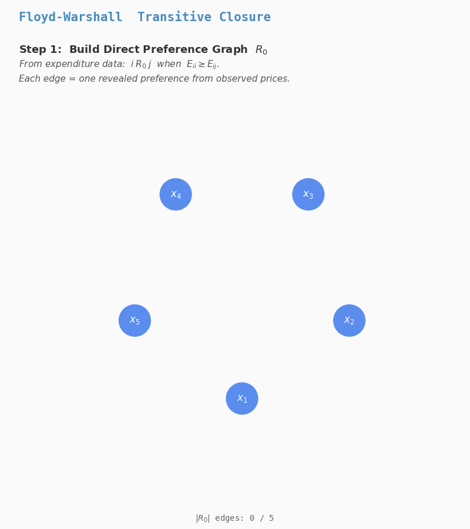
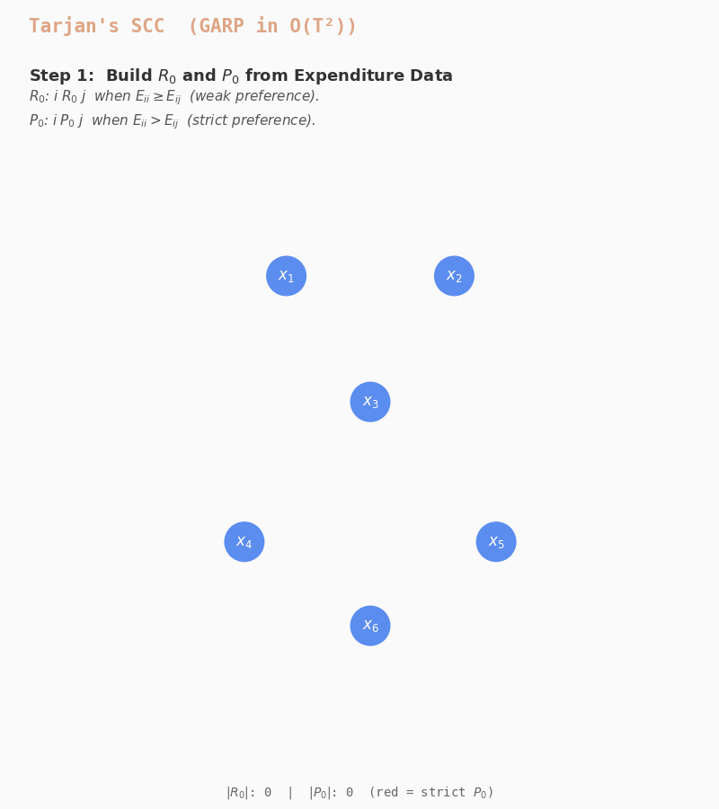
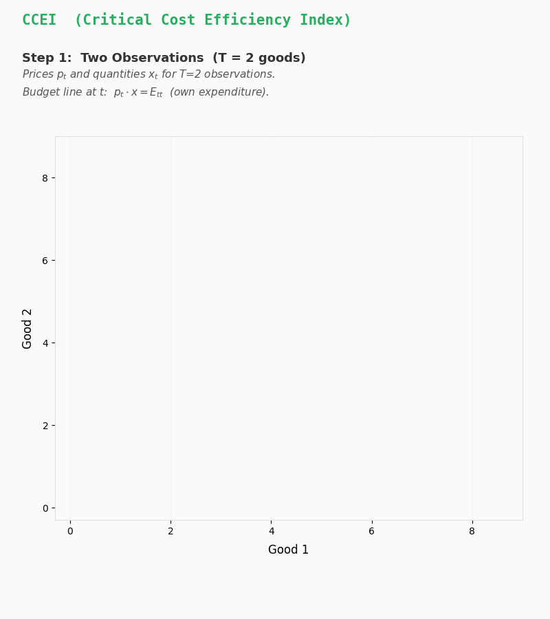
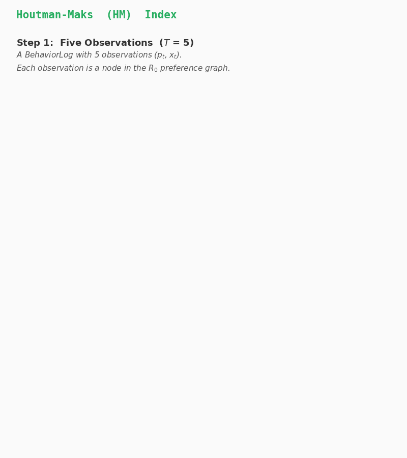

Algorithms#
Design Philosophy
Algorithms are chosen to be provably
optimal or best-in-class. The Rust engine (rpt-core) handles all graph and LP
computation; Python is I/O only. Rayon thread-pool parallelism gives linear
scaling across cores.
This page documents the algorithmic choices, complexity analysis, and the reasoning behind each implementation decision.
Complexity#
The complexity classification for preference-graph acyclicity testing is due to Smeulders, Cherchye, De Rock & Spieksma (2014, ACM TEAC 2(1)). A comprehensive survey of the algorithmic landscape is provided by Smeulders, Crama & Spieksma (2019, EJOR 272(3)).
Problem |
Complexity |
Economic Significance |
|---|---|---|
GARP / SARP / WARP |
\(O(T^2)\) |
Fundamental test of utility maximization. |
CCEI (Afriat index) |
\(O(T^2 \log T)\) |
Measure of “near-rationality” via budget deflation. |
MPI (Money Pump) |
\(O(T^3)\) |
Direct measure of welfare loss from inconsistency. |
HARP (Homothetic) |
\(O(T^3)\) |
Test for homothetic (scale-invariant) preferences. |
Houtman-Maks |
NP-hard |
Max subset of rational observations (Outlier detection). |
VEI (Varian Index) |
NP-hard |
Observation-specific efficiency (Precision diagnostics). |
Stochastic RUM |
NP-hard |
Population-level rationality (Random Utility Models). |
Budget-Based Methods#
GARP — SCC Algorithm#
Definition: A dataset \(\{(p_t, x_t)\}_{t=1}^T\) satisfies the Generalized Axiom of Revealed Preference (GARP) if for every sequence of observations \((t_1, t_2, \dots, t_k)\), the condition \(p_{t_1}x_{t_1} \geq p_{t_1}x_{t_2}, \dots, p_{t_k}x_{t_k} \geq p_{t_k}x_{t_1}\) implies that all inequalities are actually equalities.
Intuition: If an agent selects bundle \(A\) when \(B\) was less expensive, this reveals \(A \succeq B\). If the agent subsequently selects \(B\) when \(A\) was strictly less expensive, this produces a contradiction (\(B \succ A\)), implying no stable utility function can rationalize the observed behavior.
Traditional approach (pre-2015): Build the direct observation graph \(G_{R_0}\), compute its transitive closure \(R^*\) via Floyd-Warshall in \(O(T^3)\), then check \(\neg(i R^* j \wedge j P_0 i)\) for all pairs.

Floyd-Warshall builds the full transitive closure R* in O(T³)
Our approach: Talla Nobibon, Smeulders & Spieksma (2015, JOTA 166(3)) proved that transitive closure is unnecessary. Instead, we use Strongly Connected Components (SCCs).

Tarjan's SCC detects GARP violations in O(T²) — no closure needed
Theorem (Talla Nobibon et al., 2015)
GARP is violated if and only if some strongly connected component (SCC) of the direct weak preference graph \(G_{R_0}\) contains a strict preference arc \(P_0\).
Why this works: If observations \(i\) and \(j\) are in the same SCC of \(R_0\), then \(i R^* j\) (there exists a directed path of weak preferences from \(i\) to \(j\)). A GARP violation occurs if \(i R^* j\) and \(p_j x_j > p_j x_i\). This is exactly what the SCC check detects: a cycle containing at least one “strictly more expensive” edge.
Example: Suppose at \(t=1\), you buy \(x_1\) at prices \(p_1\) and could have bought \(x_2\) (\(p_1 x_1 \geq p_1 x_2\)). At \(t=2\), you buy \(x_2\) at prices \(p_2\) and could have bought \(x_1\) while it was strictly cheaper (\(p_2 x_2 > p_2 x_1\)). This forms a 2‑cycle \(1 \xrightarrow{R_0} 2 \xrightarrow{P_0} 1\). Both observations are in the same SCC, and there is a strict preference arc \(P_0\) between them. GARP fails.
Algorithm:
Build \(R_0\) and \(P_0\) from expenditure data — \(O(T^2)\)
Tarjan’s SCC decomposition on \(R_0\) — \(O(T + |A|) \leq O(T^2)\)
For each arc \((i,j)\) where \(\text{scc}[i] = \text{scc}[j]\), check \(P_0[i,j]\) — \(O(T^2)\)
Total: \(O(T^2)\) — provably tight. For \(T = 10{,}000\), this is \(1{,}000\times\) faster than Floyd-Warshall.
Implementation
Rust:
rpt-core/src/garp.rs—garp_check()uses Tarjan’s SCC (no closure).Batch dispatch:
batch.rsauto-selects \(O(T^2)\) when only GARP is requested.
CCEI (Afriat Efficiency Index)#
Definition: The Critical Cost Efficiency Index (CCEI) is the supremum of all \(e \in (0,1]\) such that the deflated data \(\{(e \cdot p_t, x_t)\}_{t=1}^T\) satisfies GARP.
Intuition: If you fail GARP, how much would we have to “shrink” your budget to make your choices look rational? A CCEI of 0.95 means that if you had 5% less money at each step, your observed choices would no longer be seen as “wasteful” relative to other options, as those other options would have been outside your budget.
Example: Suppose \(p_1 x_1 = 100\) and \(p_1 x_2 = 105\). You bought \(x_1\) even though \(x_2\) was only slightly more expensive. If you also have a preference revealing \(x_2 \succ x_1\), you have a violation. By setting \(e = 100/105 \approx 0.952\), the cost of \(x_2\) at \(t=1\) becomes \(0.952 \times 105 = 100\). Now \(x_2\) is exactly as expensive as \(x_1\), so choosing \(x_1\) no longer reveals a strict preference over \(x_2\).
Algorithm: The CCEI is found by a discrete binary search over the \(T^2\) critical efficiency ratios \(\{E_{ij} / E_{ii}\}\).
Collect all pairwise ratios \(e_{ij} = p_i x_j / p_i x_i\) where \(e_{ij} < 1\).
Sort and deduplicate these \(\leq T^2\) values.
Binary search: for a candidate \(e\), check GARP on the deflated data.
Total: \(O(T^2 \log T)\).
Optimization: SCC vs Closure
Previous implementations often called Floyd-Warshall (\(O(T^3)\)) inside the binary search. Since we only need a pass/fail result, the \(O(T^2)\) SCC check is sufficient, saving a factor of \(T\) in the inner loop.
Implementation
Rust:
rpt-core/src/ccei.rs—ccei_search()performs the discrete binary search.

CCEI shrinks budget sets until preference cycles disappear
MPI (Money Pump Index) — Karp’s Algorithm#
Definition: The Money Pump Index (MPI) measures the maximum average budget savings per step in a preference cycle.
Intuition: If your preferences are \(A \succ B \succ C \succ A\), an arbitrageur could trade you \(A\) for \(B\) (and charge a small fee), then \(B\) for \(C\), then \(C\) for \(A\), ending up with their original goods plus your fees. The MPI quantifies how much “money” can be pumped out of you this way.
Example (Money Pump Cycle): 1. At \(t=1\), you buy \(x_1\) for $10; you could have bought \(x_2\) for $8 (savings = 20%). 2. At \(t=2\), you buy \(x_2\) for $10; you could have bought \(x_1\) for $8 (savings = 20%). By trading back and forth, 20% of the budget is “wasted” in each round of the cycle. The MPI for this cycle is 0.20.
Algorithm: We model this as finding the Maximum Mean-Weight Cycle in a directed graph where edge weights are relative savings \(w_{ij} = (E_{ii} - E_{ij})/E_{ii}\).
PrefGraph uses Karp’s Algorithm, which uses dynamic programming to find the optimal cycle in \(O(VE)\) time, which is \(O(T^3)\) here.
Implementation
Rust:
rpt-core/src/mpi.rs—mpi_karp()implements the exact DP.
References: Echenique, Lee & Shum (2011); Smeulders et al. (2013).
HARP (Homothetic Axiom) — Max-Product Paths#
Definition: The Homothetic Axiom of Revealed Preference (HARP) tests if choices are consistent with a utility function \(u(x)\) that is linearly homogeneous (\(u(\alpha x) = \alpha u(x)\)).
Intuition: Homothetic preferences imply that your relative choices between goods don’t change as your income increases; you just scale everything up. This imposes a much stricter requirement: not just “no cycles”, but “the product of expenditure ratios along any cycle cannot exceed 1.”
Algorithm: We use a log-transform to turn the product check into a sum check. 1. Define weights \(W_{ij} = \log(E_{ii} / E_{ij})\). 2. Find the maximum-weight path between all pairs using a modified Floyd-Warshall. 3. HARP holds if no diagonal entry is positive (no positive-sum cycle).
Complexity: \(O(T^3)\) due to the all-pairs shortest (longest) path requirement.
Implementation
Rust:
rpt-core/src/harp.rs—harp_check().
Houtman-Maks Index — Greedy + ILP#
Definition: The Houtman-Maks index is the size of the largest subset of observations that is consistent with GARP.
Intuition: If you have 100 shopping trips and 5 of them are completely unusual (e.g., buying for a large party), GARP might fail because of those 5 outliers. Houtman-Maks asks: “What is the maximum number of observations we can keep such that they are perfectly rational?”
Complexity: This is NP-hard. Formally, it is equivalent to the Maximum Weight Independent Set on a conflict graph, or more directly, the Minimum Directed Feedback Vertex Set (DFVS) on the preference graph.
Algorithm: 1. Greedy (Default): SCC‑aware heuristic per Heufer & Hjertstrand (2015). Decompose by SCC, then iteratively remove the node with highest violation participation; extremely fast and usually within 1–2% of optimal. 2. Exact (ILP): Integer program with binary \(z_t \in \{0,1\}\) indicating whether observation \(t\) is kept; maximize \(\sum z_t\) subject to GARP constraints.
Total: NP-hard, but practical for \(T \leq 500\) using SCC decomposition.
Mononen (2023) correction
Demuynck & Rehbeck’s original formulation can report incorrect values because
strict inequality constraints are evaluated as weak in the LP relaxation.
Our implementation handles this via the binary threshold (z < 0.5), which
is robust to this issue since the variables are constrained to be integer.
Implementation
Rust:
rpt-core/src/houtman_maks.rs—houtman_maks()(greedy) andhoutman_maks_exact()(ILP via HiGHS).ILP solver:
rpt-core/src/lp.rs—solve_hm_ilp().
References: Houtman & Maks (1985); Heufer & Hjertstrand (2015).

Houtman-Maks removes the minimum observations to break all preference cycles
VEI (Varian Efficiency Index) — Exact MILP#
Definition: The VEI assigns an individual efficiency level \(e_t \in [0,1]\) to each observation such that the vector \((e_t)_{t=1}^T\) maximizes some objective (usually \(\sum e_t\)) subject to GARP.
Intuition: Unlike CCEI, which applies a single “penalty” to every observation, VEI allows us to say: “Trip #14 was extremely irrational (e=0.7), but Trip #1 was perfect (e=1.0).” This provides much higher diagnostic resolution for identifying when behavior became inconsistent.
Algorithm (Mononen, 2023): PrefGraph implements the state-of-the-art Row Generation algorithm. 1. Formulate the problem as a Weighted Minimum Feedback Arc Set (WFAS) — find the minimum-cost set of strict revealed preferences to remove so that no directed cycle remains. 2. Initialize with all 2-cycles (WARP violations). 3. Solve the MILP with the current constraint set. 4. Run a separation oracle (DFS) to find any remaining violated cycles in the residual graph. 5. If cycles are found, add new cycle constraints and re-solve; otherwise, terminate.
Complexity: NP-hard, but this reformulation is \(10{,}000\times\) faster than
previous naive ILP formulations. The LP relaxation (compute_vei) is available
as a fast polynomial-time heuristic.
Demuynck & Rehbeck (2023) bug
Mononen (2023) documents a 15–62% error rate in the Demuynck & Rehbeck MILP formulation, caused by treating strict inequality constraints as weak in the LP relaxation. The WFAS reformulation used in PrefGraph avoids this entirely.
Implementation
Rust:
rpt-core/src/vei.rs—compute_vei()(LP relaxation) andcompute_vei_exact()(MILP with row generation).
References: Varian (1990, J Econometrics); Mononen (2023).
GAPP (Generalized Axiom of Price Preference)#
Definition: GAPP tests whether prices (not quantities) reveal consistent preferences. This is the dual of GARP.
Intuition: While GARP asks “is the bundle you chose better than other affordable bundles?”, GAPP asks “is the price you paid lower than other prices that would have made that bundle affordable?” It tests for utility maximization when consumers respond primarily to price signals rather than quantity constraints.
Algorithm: The price preference matrices are defined as:
A violation occurs if : \(R_p^*[s,t] \wedge P_p[t,s]\). This is the same structure as GARP but on the transposed price-expenditure graph.
Implementation
Rust:
rpt-core/src/gapp.rs—gapp_check()uses SCC-optimized transitive closure on the price preference graph.
Reference: Deb, Kitamura, Quah & Stoye (2023, RES).
Stochastic Choice and RUM#
Definition: Stochastic choice models analyze the probability \(P(x|A)\) of choosing item \(x\) from a menu \(A\). A Random Utility Model (RUM) assumes the consumer has a utility \(U_i = V_i + \epsilon_i\) where \(\epsilon_i\) is a random error term.
Key Axioms: - Regularity: \(P(x|A) \geq P(x|B)\) whenever \(A \subseteq B\); removing options should not decrease the probability of choosing an existing item. - IIA (Independence of Irrelevant Alternatives): The ratio \(P(x|A)/P(y|A)\) is constant across menus that contain both \(x\) and \(y\).
Algorithms: PrefGraph implements maximum likelihood estimation for: - Multinomial Logit (MNL): Type‑I Extreme Value (Gumbel) errors; satisfies IIA. - Luce choice rule: \(P(x\mid A) = \dfrac{w_x}{\sum_{y\in A} w_y}\); equivalent to MNL under a log‑weight parameterization.
Implementation
Python:
src/prefgraph/contrib/stochastic.py—fit_random_utility_model().
References: McFadden (1974); Chambers & Echenique (2016), Chapter 13.
Practical Usage: Code Examples#
The following examples demonstrate how to call the primary algorithms using the Python API.
GARP and CCEI (Budget Data)
from prefgraph import BehaviorLog, validate_consistency, compute_integrity_score
# 1. Create a log (Prices p and Quantities x)
log = BehaviorLog(cost_vectors=p, action_vectors=x)
# 2. Test GARP (O(T²))
result = validate_consistency(log)
print(f"Consistent: {result.is_consistent}")
# 3. Compute CCEI (O(T² log T))
ccei = compute_integrity_score(log)
print(f"CCEI: {ccei.efficiency_index:.4f}")
SARP and WARP (Menu Data)
from prefgraph import MenuChoiceLog, validate_menu_sarp
# 1. Create a log (Menus and chosen item indices)
log = MenuChoiceLog(menus=menus, choices=choices)
# 2. Test SARP (O(T²))
result = validate_menu_sarp(log)
print(f"SARP Consistent: {result.is_consistent}")
Money Pump Index (MPI)
from prefgraph import compute_confusion_metric
# Calculate the max average savings per cycle (O(T³))
mpi = compute_confusion_metric(log)
print(f"Money Pump Index: {mpi.mpi_value:.4f}")
Stochastic Choice (RUM)
from prefgraph import StochasticChoiceLog, fit_random_utility_model
# 1. Create a log (Menus and choice frequencies)
log = StochasticChoiceLog(menus=menus, choice_frequencies=choice_frequencies)
# 2. Fit Logit model
result = fit_random_utility_model(log, model_type="logit")
print(f"Log-Likelihood: {result.log_likelihood:.2f}")
print(f"Satisfies IIA: {result.satisfies_iia}")
Solver Stack#
Solver |
Status |
Notes |
|---|---|---|
HiGHS |
Default |
MIT-licensed. Best open-source LP/MILP solver (Machado, 2024). Used by SciPy since v1.6.0. Competitive with Gurobi for LP; ~10× slower for MIP. |
Gurobi |
Optional |
Commercial license required. Enable via |
To build with Gurobi support:
# Requires GUROBI_HOME set and gurobi shared library available
cd rust && cargo build --release --features gurobi